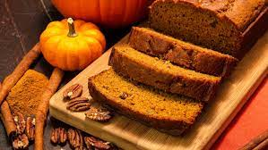

Doug's Easy Applesauce

Description
A very simple applesauce recipe using brown sugar and apple cider.
Prep time is 15 minutes
Cook time is 20 minutes
Total time is 35 mintues
Serving size is 8 servings
Ingredients
12 medium apples that are peeled, cored, and chopped
1/3 cup of light brown sugar
1 1/2 teaspoons of ground cinnamon
1 1/2 teaspoons of lemon juice
Steps
Step 1: Mix apples, cinnamon, lemon juice, cider, and salt together in a large pot over medium-high heat
Step 2: Bring to a boil, then reduce heat to low and simmer for 20 minutes until apples are soft
Step 3: Use a potato masher while cooking to help break down the apples
Step 4: Serve warm or cool
Downeast Maine Pumpkin Bread

Description
The pumpkin bread is an old Maine recipe, moist and spicy. Tastes good a day later. Great to give as a gift.
Prep time: 15 minutes
Cook time: 50 mintues
Total time: 1 hour and 5 mintues
Servings: 24
Ingredients
1 (15 ounce) can pumpkin puree
3 1/2 cups all purpose flour
1 teaspoon ground cinnamon
1/2 teaspoon of ground cloves
1/4 teaspoon of ground ginger
Steps
Step 1: Preheat oven to 350 degrees. Grease and flour 2 9x5 inch loaf pans
Step 2: In a large bowl, mix together pumpkin puree, eggs, oil, water and sugar until well blended. In a separate bowl, whisk together the flour, baking soda, salt, cinnamon, nutmeg, cloves and ginger. Stir the dry ingredients into the pumpkin mixture until just blended. Pour into the prepared pans
Step 3: Bake for about 50 minutes in the preheated oven. Loaves are done when toothpick inserted comes out clean.
Chicken Marsala
Description
Super quick and easy to make for dinner.
Prep time: 10 mintues
Cook time: 20 minutes
Total time: 30 mintues
Servings: 4
Ingredients